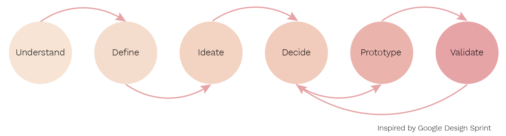
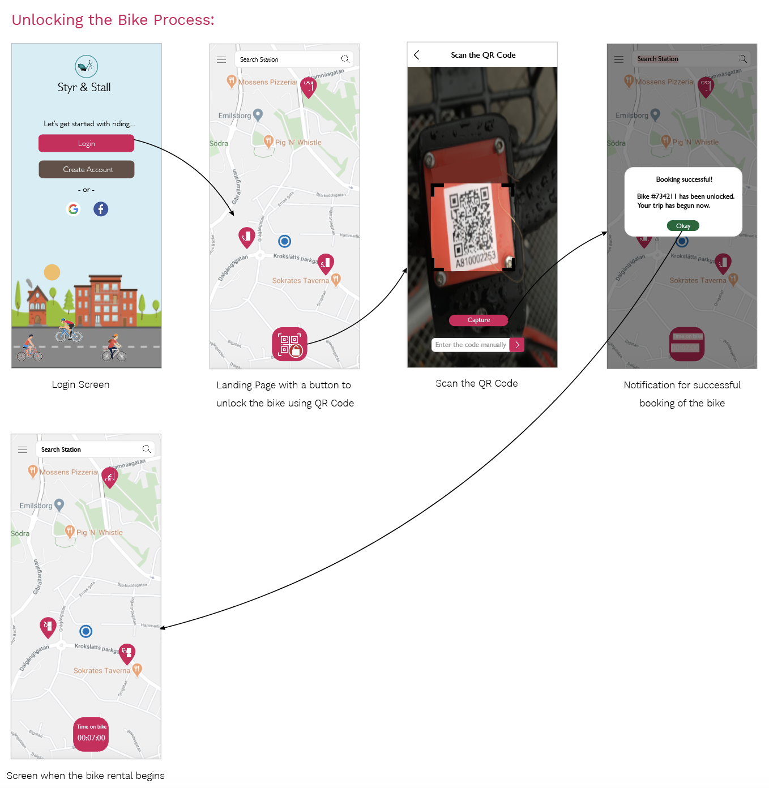
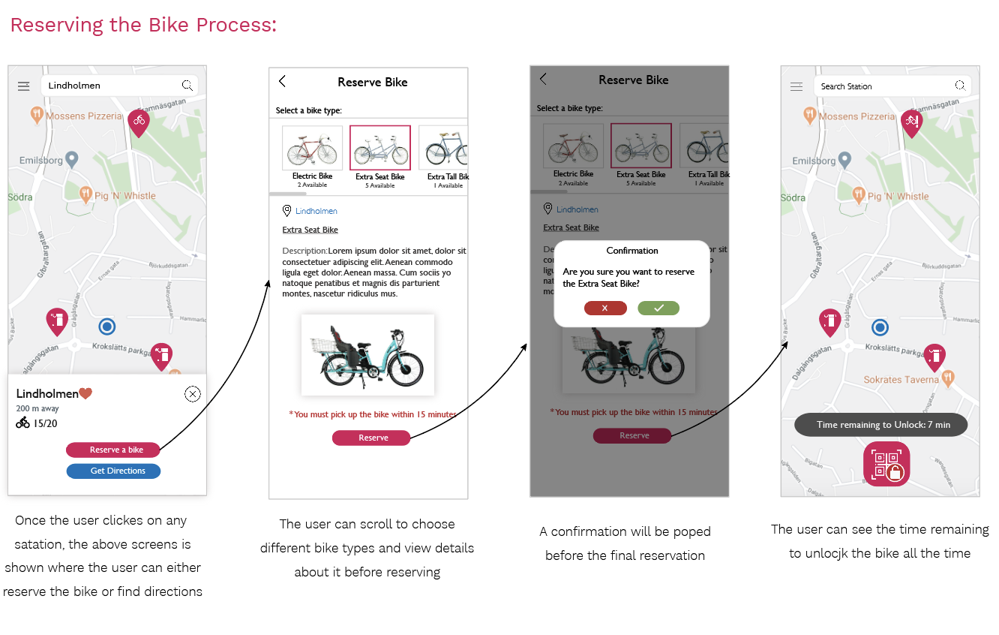
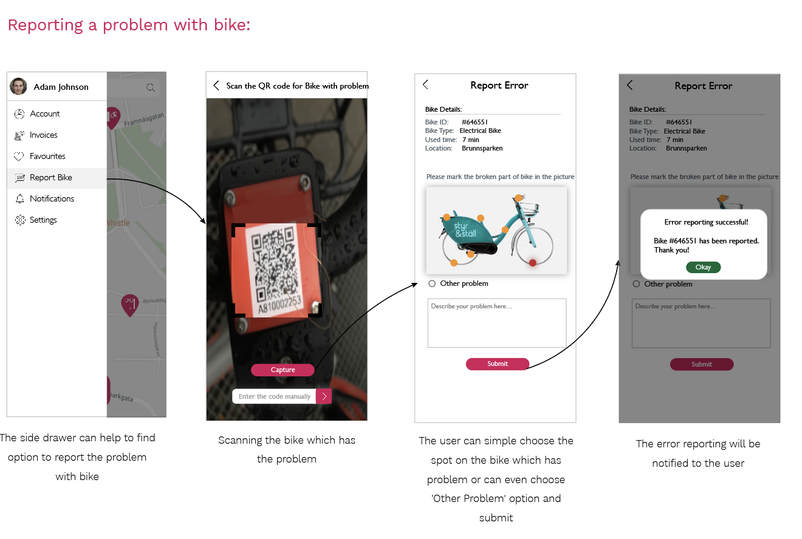

Projects
App Design for Bike Rental System
Group Project | Duration : 3 weeksDesign Goal: To solve the usability problems while using a bike rental app
This project was done as a part of course Interaction Design Methodology by a group of 6 people including myself. Styr & Ställ (S&S)
is a public bicycle rental program in Gothenburg, Sweden. As of now, there is no particular App designed for this system. This project
is an attempt to solve the usability issues for current system and make the bike renting process easier.
Methods
Tools
Design Process
Phase 1
Understand
We chose User Interviews method for this phase where asking consent was a priority. The objective of this phase was to gain empathy for user’s experience
of using th S&S system.
What was learnt?
We found that people who don’t use the system thinks it is more expensive than it is. One interviewee complained that as the number of users are increasing, it’s becoming difficult
to find a parking station. Some people expected to look for information about using system on google and found it difficult to find. Due to the complex user interface at the bike
station, one user gave up the idea of renting the bike as it was too difficult to understand how to rent it. Thus, from all the interviews, we learnt different issues the users are
facing with the usability of the system.
Define
For the define phase the method that was used was Success Metrics & Signals. This method works by defining
GOAL, SIGNAL and METRIC. Following came to be the result:
1) GOAL: Get more users through providing a user interface that is reliable, designed for user needs and easy to use
2) SIGNAL: Observation at bike stations, changes in number of S&S system before and after
3) METRIC: Survey, observation, Statistical data from S&S
We picked this method because it is a quick and easy method to come up with the goals, signals and metrics. Finally we came up with more narrowed
goals, signals and
metrics that will help us through the project
Ideate
In the ideation phase, we selected three methods: Boot Up Note Taking ,Crazy 8’s + Sharing and Voting and Solution Sketch.
Boot Up Note Taking: We started with where each team member spent 10 minutes to evaluate the conclusion from previous 2 phases and to gather all the thoughts on paper.
Crazy 8’s + Sharing and Voting: In the this method, every member was supposed to take a paper, fold it to make 8 rectangles and sketch 8 ideas in 8 rectangles in 8 minutes. We got around 45 amazing ideas at the end of this method. Later, each member shared their ideas and received votes on them. In the end, we selected 3 ideas.
Solution Sketch: In the last method, we formed 3 pairs in groups and divided into 3 ideas within pairs. Every person sketched the idea (solution) they were assigned.
In the end of Sketching phase, we were ready with 3 Solution Sketches.
Decide
In this phase, we decided to use the method Heatmap voting. to choose one Solution. This method is a good way
of finding the best part of each sketch in order to open your mind up to maybe combine the favourite features
from different sketches. However, as all 3 sketches had completely different ideas, we decided that the SolutionSketch
which gets the most voted features will be chosen. The three ideas we had were:
- An app for the bike rental
- Adding accessories and storage at bike stations
- An interface design for bike stations
The sketch with the “App design” got the most of the votes and thus, we got our final solution idea to proceed with.
Prototype
For the prototyping phase, we decided to create a paper prototype first. After getting validated, we then
created low fidelity wireframes. Then again validated and finally designed the high fidelity wireframes.
Paper Prototype: We formed two “sub-teams” and each were assigned a few of the screens to make, and we decided together on some colours and icons for the app. The goal
of the prototyping was to find the final details and get the design validated. We also made decisions about the graphical layout, colours, icons, and menu items.
Low Fidelity Wireframes: After the first iteration of validation phase, we learnt few things about the App design and thus made sure to update those changes in our Low fidelity wireframes.
High Fidelity Wireframes: After the second iteration of validation phase, a lot of things were learnt. One of the most important thing that I learnt was that low fidelity wireframes
can be confusing and requires the users to imagine more. As we didn’t have time to design High fidelity wireframes during the course, I myself designed all the High Fidelity Wireframes.
Validate
The general goal of this phase was to get feedback from users by giving them a chance to interact with the prototype.
The method that we used in this phase was Cognitive Walkthrough.
Cognitive Walkthrough>: This method was chosen because we wanted to validate the main functions of our design rather than all the details in the App. The mediator gave three tasks to
the users and recorded how they interact with the prototype and describe their actions. After all tasks were completed, the users were asked about more feedbacks and confusions about the whole process.
What was learnt?
We discussed the insights from the demos and found problems, vague descriptions, and confusions during the whole process. It gave
us a lot of information about learnability and usability of our prototype. It also gave ideas of where to improve in our design in further work.
Design Rationale based on Literature



© Copyright © All rights reserved